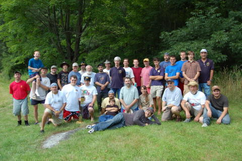

This years Nationals was held again in the historic Hudson Valley region of southern Duchess County, New York, from Sunday, July 22 through Friday, July 27. Camp Conron (a Boy Scout Camp site) was been rented for the occasion. The cost per. participant was be $140 and included CO2, drinks, lunch at the lake each day and the National Award Dinner. There was be tents, tables, and chairs available for the combatants to escape into the shade between battles. A large workshop area was available and the combatants did not have to pack up and lug everything back to the hotel each day!
Our submarines (grass eating carp) have done a terrific job of clearing the lake of prop jamming weeds and the week looked good. Only weather problem was on Monday when the rain held the fleets in port for half a day and caused a re-arrangement of the schedule to get in the full number of battles.
Well, the Allied forces came and saw and lost big! Three large Mustashi Battleships were too much for the biggest four battle wagons that the Allied could muster. The Allied forces had an Iowa, two North Carolinas and a Richelieu but the Axis forces put down two of them and kept the others at bay. In the smaller ships, the Axis also had an advantage. Only in the mid range did the Allied forces have an advantage but with the smaller ship able to keep in contact and the larger ship taking time out from chasing the Iowa even this advantage was overruled.
The final score for Allied vs. Axis was: Allied forces - 73320 points and Axis forces - 109960. This is the largest score recorded in IRC history! We had 32 combatants, 33 Combat ships and 31 sinks!
Nationals Report 2007

International R/C Warship Combat Club, Inc.
Keeping Ponds Safe since 1978
the 2007 Nats Captains